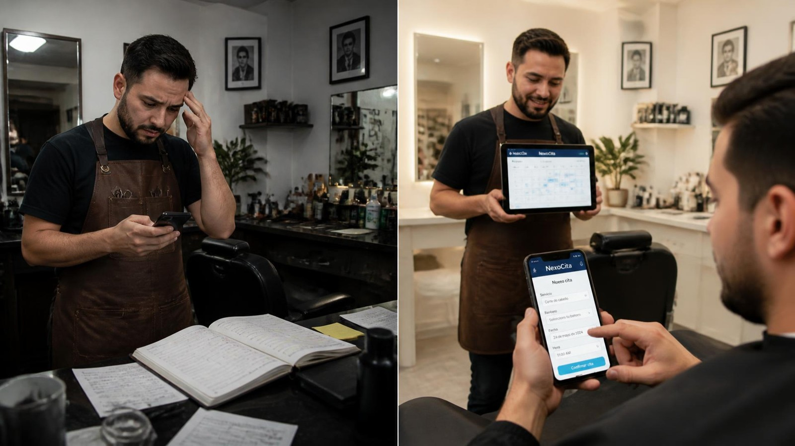

TU TIEMPO, EN ORDEN
Tu próxima cita.
Así de simple.
Elige tu servicio y encuentra el momento ideal.
Acceso al panel del negocioReserva tu cita
Hora de NicaraguaTu cita está confirmada.
Conserva estos datos para consultar o cancelar tu reserva:
¿Ya tienes una cita? Consúltala o cancélala
01 / EXPERIENCIA MULTIMEDIA
Una idea.
Muchas formas de descubrirla.
Texto, imagen, audio y video.
Explora cómo una agenda centralizada puede transformar el día a día de un negocio.
02 / EXPLORA POR CATEGORÍA
Diferentes miradas.
Una misma conexión.
Detrás de cada cita,
hay una persona.
Barberías, salones de belleza, clínicas, talleres, consultorios y profesionales independientes. Negocios distintos que comparten algo: el valor de atender bien.

DEL PROBLEMA A LA SOLUCIÓN
Menos fricción.
Más reservas.
WhatsApp, llamadas y agendas físicas dispersan la información. NEXOCITA propone reunir reservas, clientes y horarios en un solo lugar.
- 01Entra al sitio
- 02Elige servicio
- 03Elige fecha
- 04Consulta horarios
- 05Reserva tu cita
- 06El sistema registra
- 07El negocio la ve
Reservas, clientes y horarios centralizados.
La propuesta permite reservar a cualquier hora.
Una experiencia adaptable a cada pantalla.
03 / GALERÍA MULTIMEDIA
El futuro de tu agenda.
Desde todos los ángulos.
Explora los seis recursos visuales de la propuesta.
Selecciona una imagen para ampliarla.
Imágenes conceptuales extraídas de la presentación del proyecto.
04 / AUDIO INTERACTIVO
La idea también
se escucha.
Conoce el problema, la solución y el recorrido de una reserva.
Leer transcripción
NEXOCITA es una propuesta de sistema web de gestión de citas para pequeños negocios. Hoy, los mensajes, las llamadas y las agendas físicas fragmentan la información. Esto puede causar citas duplicadas, horarios confusos y tiempo perdido. Nuestra propuesta reúne reservas, clientes y horarios en una sola plataforma. El cliente entra al sitio, selecciona un servicio, elige una fecha, consulta los horarios y reserva. El sistema registra la cita y el negocio la visualiza. Desde una barbería hasta un consultorio, la meta es la misma: más organización, menos errores y una mejor experiencia. NEXOCITA. Tu tiempo, en orden. Proyecto académico de la Universidad Central de Nicaragua.
Una agenda. Una nueva experiencia.
Presentación de NEXOCITA · Narración sintética en español
05 / VIDEO MULTIMEDIA
De una gestión manual.
A una experiencia digital.
Un recorrido visual por la propuesta NEXOCITA.
Presentación visual · 30 segundos · Activa los subtítulos para seguir el recorrido.
UNA BASE PARA LO QUE SIGUE
Pensado para crecer.
La propuesta contempla una interfaz responsive, una API centralizada y una base de datos. Las siguientes capacidades forman parte de la hoja de ruta.
Conoce la arquitectura propuesta
Usuario → Frontend → API / Backend → Base de datos.
Frontend: HTML, CSS, JavaScript o React. Backend: Node.js y Express. Datos: MySQL o PostgreSQL. Versionado: Git y GitHub. La selección final está sujeta a requerimientos y validación técnica.
EL EQUIPO DETRÁS DE LA IDEA
Conectamos ideas.
Diseñamos soluciones.
Universidad Central de Nicaragua
Desarrollo de Aplicaciones Multimedia 1 · 2026